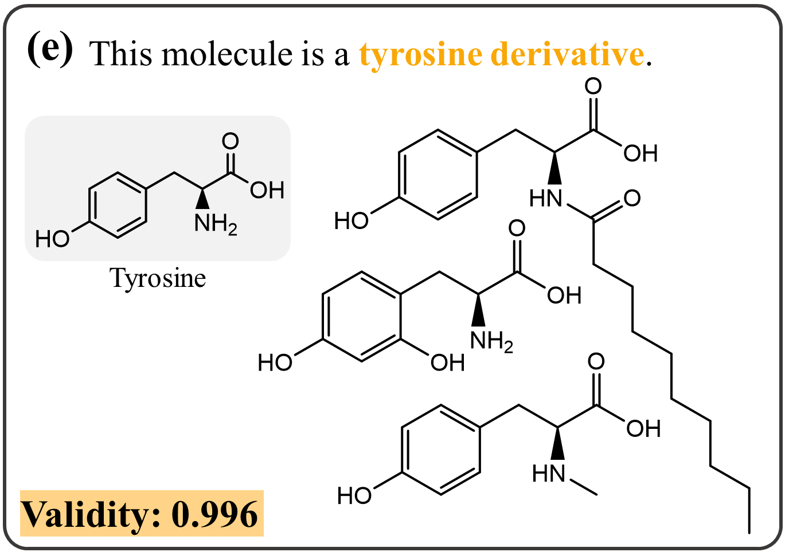
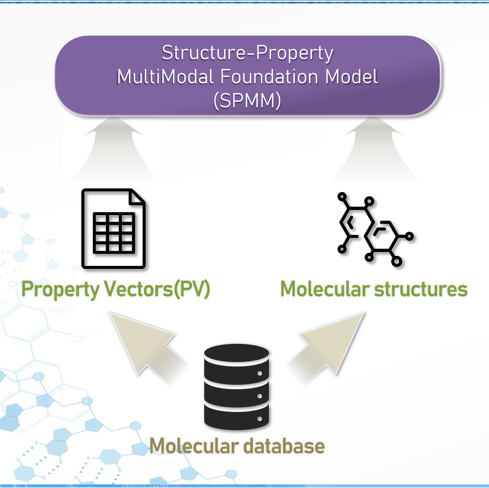
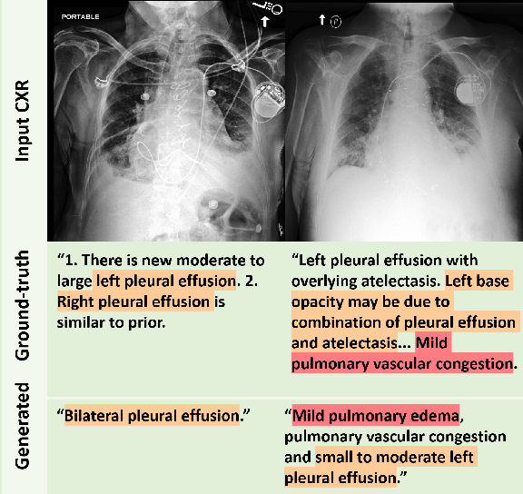
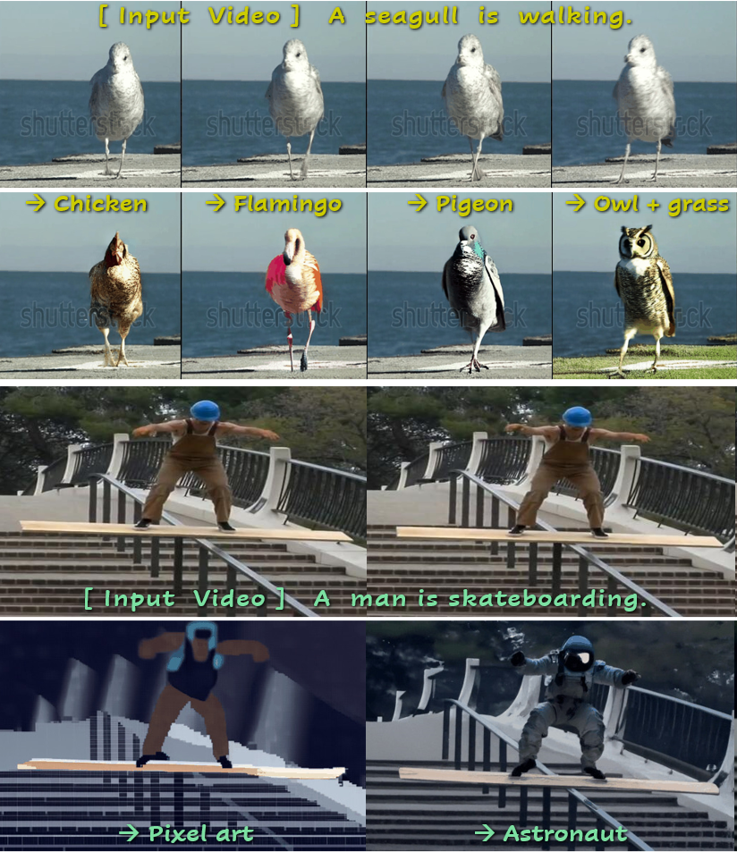
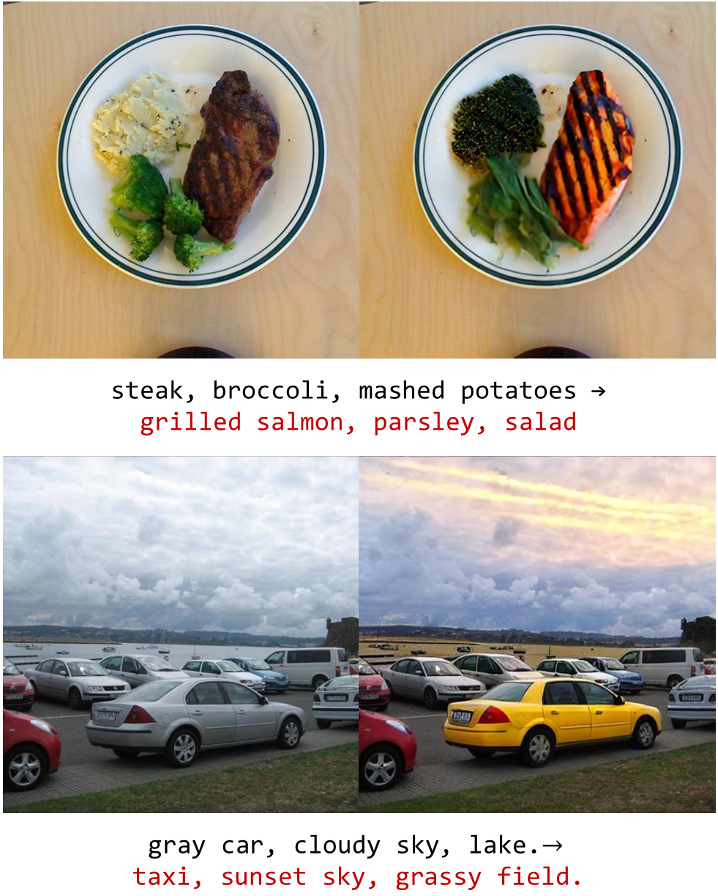
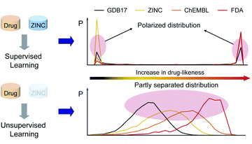

|
Jinho Chang Ph.D. student in KAIST, currently a member of the BioImaging-Signal Processing & Learning Lab(BISPL). I am interested in diffusion models for their score function applications and sampling optimization, and multi-modal models for informative representations and cross-modal generation. Also, leveraging my chemistry background, I aim to apply state-of-the-art AI techniques to various important chemical challenges with minimal adaptation costs. |
{kind=link}
ResearchI'm currently interested in Diffusion models and their applications, Multimodal learning, and AI for chemistry. |

|
Contrastive CFG: Improving CFG in Diffusion Models by Contrasting Positive and Negative Concepts
Jinho Chang*, Hyungjin Chung, Jong Chul Ye arXiv, 2024 Link We point out the drawback of naively negating the Classifier-Free Guidance (CFG) term, and propose a novel approach to enhance negative CFG in conditional diffusion models using contrastive loss. By aligning or repelling the denoising direction based on the given condition, our method overcomes the distortions caused by traditional negative CFG, achieving superior sample quality and effective removal of unwanted features across various scenarios. |
|

|
LDMol: Text-Conditioned Molecule Diffusion Model Leveraging Chemically Informative Latent Space
Jinho Chang*, Jong Chul Ye arXiv, 2024 Link We present a new latent diffusion model LDMol for molecule generation with complex conditions like natural texts. Leveraging a chemically informative latent space obtained with contrastive learning, LDMol not only outperforms previous text-to-molecule generative models, but can also be applied to downstream tasks like retrieval and molecule editing. |
|

|
Bidirectional Generation of Structure and Properties Through a Single Molecular Foundation Model
Jinho Chang*, Jong Chul Ye Nature Communications, 2024 Link We introduce a multimodal molecular pre-trained model that integrates molecular structures and their biochemical properties, which enables various multimodal and unimodal tasks like conditional molecule generation, property prediction, molecule classification, and reaction prediction. |
|

|
LLM-CXR: Instruction-Finetuned LLM for CXR Image Understanding and Generation
Suhyeon Lee*, Wonjun Kim*, Jinho Chang, Jong Chul Ye ICLR, 2024 Link Taking inspiration from previous work on the transformer and VQ-GAN combination for bidirectional image and text generation, we developed a method for instruction-tuning a text-only LLM to gain vision-language capabilities for medical images. We let LLM understand tokenized visual inputs by instructing it to answer questions about image inputs and generate image outputs. |
|

|
DreamMotion: Space-Time Self-Similarity Score Distillation for Zero-Shot Video Editing
Hyeonho Jeong*, Jinho Chang, Geon Yeong Park, Jong Chul Ye ECCV, 2024 Link We present a score distillation sampling for video editing to circumvent the standard reverse diffusion process. We propose to match the space-time self-similarities during the score distillation, demonstrating its superiority in altering appearances while accurately preserving the original structure and motion. |
|

|
Ground-A-Score: Scaling Up the Score Distillation for Multi-Attribute Editing
Hangeol Chang*, Jinho Chang*, Jong Chul Ye arXiv, 2024 Link We propose a simple yet powerful model-agnostic image editing method that tackles complex image editing queries in a manner of divide-and conquer. Moreover, the selective application with a new penalty coefficient helps to precisely target editing areas while preserving the integrity of the objects in the source image. |
|

|
Drug-likeness Scoring Based on Unsupervised Learning
Kyunghoon Lee*, Jinho Chang*, Seonghwan Seo*, and Woo Youn Kim Chemical Science, 2022 Link We proposed a novel unsupervised learning model that could quantify the drug-likeness of a given molecule, by adopting a language model trained via unsupervised learning. Our model showed more consistent performance across different datasets and gave more reasonable scores. |
Experiences |
|
|
Internship as AI developer
Jan. 2021 ~ Jun. 2021 HITS ai Development of a reinforcement learning model to generate molecules with specific chemical or pharmaceutical properties guided by the given RL reward. |
Education |
|
Ph.D. student in Artificial Intelligence
Sep. 2022 ~ present Korea Advanced Institute of Science and Technology (KAIST)
|
M.S. in Computer Science and Chemistry (double major)
Mar. 2018 ~ Aug. 2022 Korea Advanced Institute of Science and Technology (KAIST)
|
|
Last update: Dec 11, 2024 |